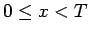
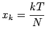
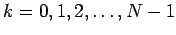

Wenn die periodische Funktion f(x) kompliziert ist oder im Intervall  nur für ein diskretes System von Punkten  mit  bekannt ist, muß die Berechnung der FOURIER-Koeffizienten näherungsweise erfolgen. Dabei kann z.B. bei der Auswertung von Meßergebnissen die Zahl N sehr groß sein. In diesen Fällen wendet man die
Methoden der numerischen harmonischen Analyse an.